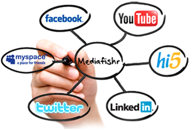
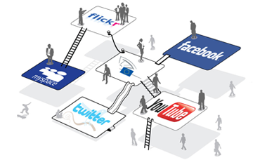

Social Media Martketing
Social Media is the technologies, platforms and methods users use to share content online. It allows people and businesses to become both readers and publishers of content. Social Media is fast moving with a constant stream of new technologies being created allowing for greater interaction and new ways to share content online.
SMM is a form of Internet Marketing conducted through the many social outlets and opportunities present on the Internet, including social networks, communities, blogs, forums and other emerging forms of online media.
75% of social media users interact with brands and companies via various social media platforms.
51% of users say social media has influenced their transactions online.
95% of media users believe companies should have a presence on social media.
Benefits of Social Media Marketing

Build a brand and raise awareness
The majority of the online population are already on social networks such as facebook and twitter. Getting your brand on those networks will let people know of your existence.
Build a network of loyal supporters
Through social media you can quickly build a network of core supporters, which is essential for any up and coming business to keep growing and expanding. It is that group of loyal followers that will keep bringing your company business and referring it to others if they are pleased with what they are finding.
Customer Service and Feedback
Social media sites are an awesome way to see what your target audience is saying about your company or your products. Take their constructive criticism and use it to enhance your product to better meet their needs.
Bring Attention to Your Products
Featuring a product on a social media site is one of the fastest ways to bring attention to it. You can announce new products, promotions and special offers, sales, contests, etc.
Access to a huge market
By using social media you are gaining access to hundreds of millions of potential customers. On Facebook there are 750 million users and on twitter there are well over 200 million users.